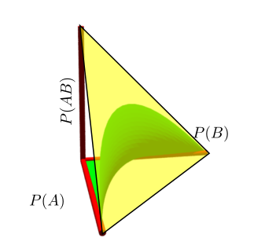

EXAMPLE: We shall consider the four blood groups $A$, $B$, $AB$ and $O.$ They occur in a certain proportion in a population. Since there are just 4 categories, their proportions must add up to 1 in any population. So enough to consider any three of them, say $A$, $B$ and $AB.$ If find these proportions for different populations we get different points in ${\mathbb R}^3.$ Naturally, they all lie in the tetrahedron $$ \{(x,y,z)~:~0\leq x,y,z,~~x+y+z\leq 1\}. $$ But, quite surprisingly, they are always seen to lie in a surface inside that tetrahedron. The surface is shown in green below.
|  |
|---|
| The green surface |
| Pair (genotype) | Blood group (phenotype) |
|---|---|
| aa, ao | A |
| bb, bo | B |
| ab | AB |
| oo | O |
| Blood group | Probablility |
|---|---|
| A | $p^2+2pr$ |
| B | $q^2+2qr$ |
| AB | $2pq$ |
| O | $r^2$ |
| Blood group | Frequency |
|---|---|
| A | $n_A=$182 |
| B | $n_B=$60 |
| AB | $n_{AB}=$17 |
| O | $n_O=$176 |
| Pair | Frequency |
|---|---|
| aa | $n_{a a}$ |
| ao | $n_{a o}$ |
| bb | $n_{b b}$ |
| bo | $n_{b o}$ |
| ab | $n_{a b}$ |
| oo | $n_{o o}$ |
EXAMPLE: Consider the random function $G(\mu) = X- \mu,$ where $X\sim N(\mu,1).$ Find the expectation of the function.
SOLUTION: You might be tempted to say that the answer is $E(X-\mu) = \mu - \mu = 0.$ Here $\mu$ was doing double duty, first as a dummy variable in defining the function $G(\cdot),$ and then as a constant in the distribution of $X.$ We should have first changed the dummy variable to something else, e.g., $G(t) = X-t.$ Then the expectation is $\mu-t,$ which is indeed a function of $t.$ /// The next example is to remind you about computation of conditional expectation.EXAMPLE: Suppose that I have a die with $P(i)=p_i$ for $i=1,...,6.$ It is rolled 100 times. What is the conditional expectation of the number of 1's given that total number of odd outputs is 62?
SOLUTION: $62\times \frac{p_1}{p_1+p_3+p_5}.$ ///EXAMPLE: First we rename the dummy variables $p$ and $q$ to $\alpha $ and $\beta,$ say: $$ \ell_{com}(\alpha ,\beta) = \text{terms free of }\alpha ,\beta + A\log \alpha + B\log \beta + C\log (1-\alpha -\beta), $$ where $$ A = 2n_{a a}+n_{a o}+n_{a b},\quad B = 2n_{b b}+n_{b o}+n_{a b},\quad C = 2n_{o o}. $$ We shall reserve the symbols $p$ and $q$ for the true (unknown) values of the parameters. Then $$ E(\ell_{com}(a,b)|\text{data}) = \text{terms free of a,b} + E(A|\text{data})\log a + E(B|\text{data})\log b + E(C|\text{data})\log (1-a-b). $$ Now $$\begin{eqnarray*} E(A|\text{data}) & = & E(n_{a a}|\text{data})+n_A+n_{AB} = n_A\times\frac{p^2}{p^2+2p(1-p-q)}+n_A+n_{AB}=A_1\\ E(B|\text{data}) & = & E(n_{b b}|\text{data})+n_B+n_{AB} = n_B\times\frac{q^2}{q^2+2q(1-p-q)}+n_B+n_{AB}=B_1\\ E(C|\text{data}) & = & E(n_{o o}|\text{data}) = n_O=C_1. \end{eqnarray*}$$ Note that the conditional expectation is a function of the dummy variables $a,b$ as well as the constants $p,q.$ So we denote it by $Q(a,b|p,q).$ As $(a,b)$ and $(p,q)$ both take values in the parameter space, this notation might confuse you at first. Now we shall find the maximum of $Q(a,b|p,q)$ wrt $(a,b)$. Remember that $p,q$ are constants, and play no role in the maximisation. This is the M-step. The output of this step consists of the maximising $(a,b),$ which may involve $p,q.$
In our example, the partial derivatives of $Q(\alpha ,\beta |p,q)$ wrt $\alpha $ and $\beta $ are: $$\begin{eqnarray*} \frac{A_1}{\alpha} & = & \frac{C_1}{1-\alpha -\beta },\\ \frac{B_1}{\beta} & = & \frac{C_1}{1-\alpha-\beta }. \end{eqnarray*}$$ Solving, we get $$\begin{eqnarray*} \alpha & = & \frac{A_1}{A_1+B_1+C_1},\\ \beta & = & \frac{B_1}{A_1+B_1+C_1}. \end{eqnarray*}$$ Notice that the RHSs are functions of $p$ and $q.$ /// We put the E-step and the M-step together to construct the EM algorithm as follows:EXAMPLE: In our example we use $$\begin{eqnarray*} p_{k+1} & = & \frac{A_1}{A_1+B_1+C_1},\\ q_{k+1} & = & \frac{B_1}{A_1+B_1+C_1}, \end{eqnarray*}$$ where the RHSs are computed at $p_{k}$ and $q_{k}.$ ///
nA = 182; nB = 60; nAB = 17; nO = 176
em = function(param) {
p = param[1]; q = param[2]; r = 1-p-q
A1 = nA*p/(p+2*r)+nA+nAB
B1 = nB*q/(q+2*r)+nB+nAB
C1 = nO
newval = c(A1,B1)/(A1+B1+C1)
cat(newval,'\n')
newval
}
param=c(1,1)/3
EXERCISE: Here we could also have used Newton-Raphson iteration and Fisher's scoring method. Try them and see if you are getting the same MLE or not.
EXERCISE: We have worked with a given model here, assuming that it is the correct model. Carry out a $\chi^2$-test of goodness-of-fit at 5% level of significance.